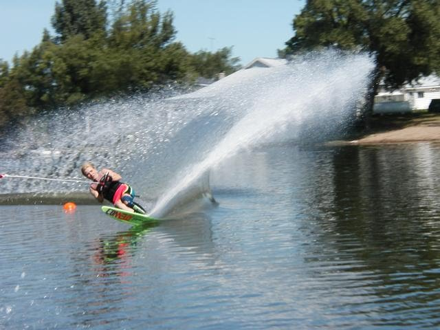

ON THE DOCK
(An Online Memoir - by Anda Vitols, 2020)
Welcome to my water ski site. I am Anda Vitols, a retired waterskier from Ontario, Canada. This is an online memoir of a really nice chapter in my life.
On "the dock" is what I called home base in competitive water skiing, on
Lake Puslinch in Cambridge, Ontario. Although I skied at many places with many people in Ontario, "the dock" was closest to my home and work. Tom "Tucker" Muir always made sure I was okay, I trained and competed with Judy Messer,who was huge positive influence. We have since dispersed geographically, but still keep in touch. Wally Sokolowski managed the practical aspects for my competitions, starting from novice through sanction. I was many time Ontario champion, Eastern Canadian water ski champion in 1992, and have Nationals medals from 1991, 1992. I'm a properly credited coach and judge, and owned my own ski school in 1980s. I was also a professional show skier.
- ANDA'S WATER SKI PICTURES
-
- ANDA'S TRAINING & COMPETITION NOTES
- My Notes: How to Water Ski (1980s)
- My Book: Self-Directed Coaching Notes: Sport Psychology Resources for Elite Athletes (2011)
- My Memoir: Anda's Water Ski History (2011)
 |
 |
- TEAM CANADA BLOG ARCHIVE water ski & alpine
- Water Ski Worlds Toronto (1979)
- From the dock to the world, I go along for the ride: "the kids" from Puslinch lake are Jason McClintock, Whitney McClintock, Jenna Mielzynski, and Erin Mielzynski developed their foundations on "the dock".
Copyright Anda Vitols 2020. All rights reserved.
|